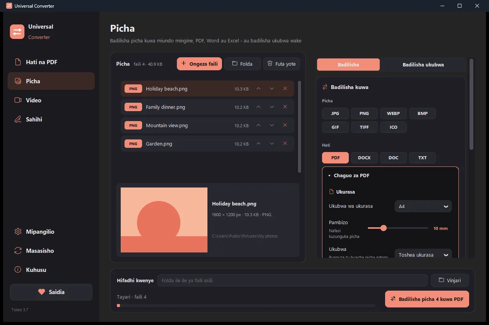
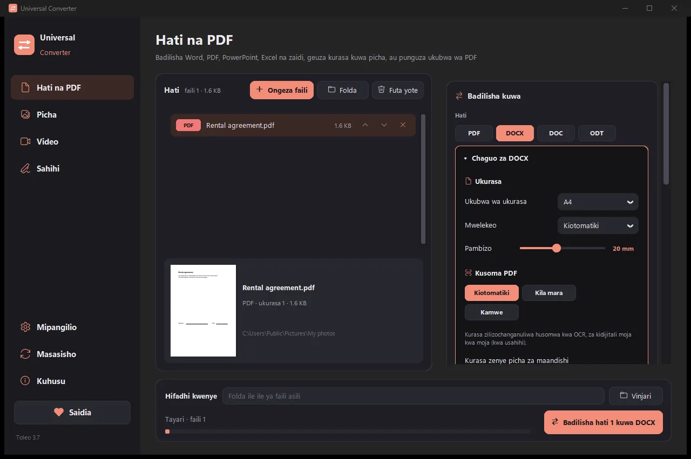
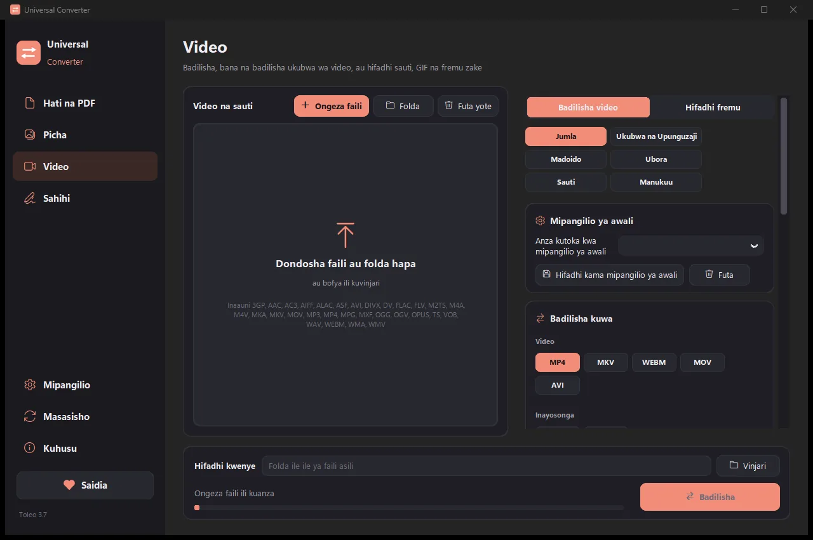
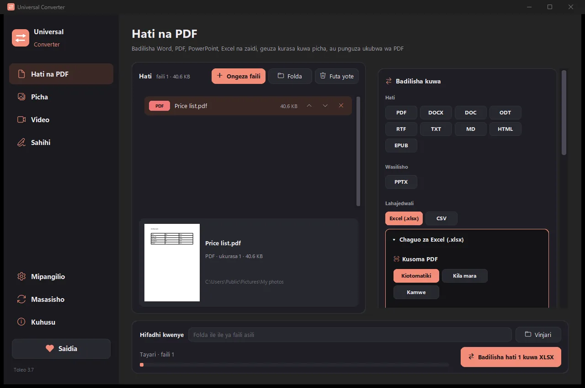
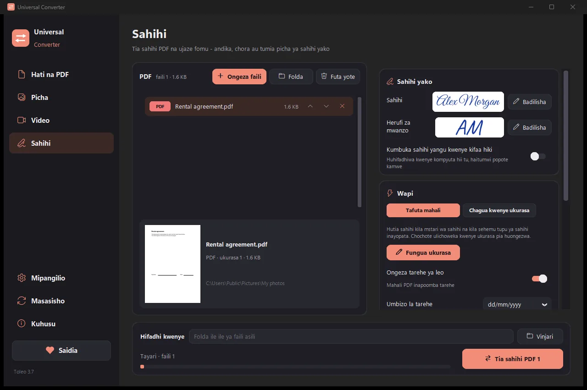

Badilisha faili zako kwenye kifaa chako mwenyewe
Picha, hati, video na sauti, PDF na majedwali kwenda Excel, vyote katika programu moja. Hakuna kinachopakiwa: faili zako haziondoki kamwe kwenye kifaa chako.
Jinsi ya kusakinisha na kusasisha
- Fungua .dmg iliyopakuliwa na uburute Universal Converter hadi Applications.
- Fungua programu. Mara ya kwanza, macOS huizuia kwa sababu haijatiwa sahihi na Apple: bofya Done.
- Fungua System Settings > Privacy & Security, sogeza chini, bofya Open Anyway na uweke nenosiri lako. Unafanya hivi mara moja tu.
Masasisho: ukiruhusu programu inapofunguliwa mara ya kwanza, hutafuta matoleo mapya kila inapoanza, huthibitisha sahihi yao ya kidijitali na huyasakinisha unapochagua.
Jinsi ya kusakinisha na kusasisha
- Gusa Pakua kwa Android kwenye simu yako.
- Fungua faili iliyopakuliwa. Android ikiuliza, ruhusu kivinjari au kidhibiti faili chako kusakinisha programu.
- Gusa Sakinisha.
Masasisho: programu hukagua takriban mara moja kwa siku na hukuambia toleo jipya linapokuwa tayari. Lipakue kwa njia ileile na ulisakinishe juu ya lile la zamani; mipangilio yako hubaki.
Jinsi ya kusakinisha na kusasisha
- Pakua faili ya .AppImage.
- Ifanye iweze kuendeshwa: bofya kulia, fungua Properties > Permissions na uruhusu iendeshwe kama programu (au kwenye terminal: chmod +x Universal-Converter-*.AppImage).
- Ibofye mara mbili. Hakuna kinachosakinishwa: programu ni faili hii moja.
Masasisho: ukiruhusu programu inapofunguliwa mara ya kwanza, hutafuta matoleo mapya kila inapoanza, huthibitisha sahihi yao ya kidijitali na huchukua nafasi ya faili ya AppImage pale ilipo.

Faragha
Kila kitu huendeshwa kwenye kifaa chako. Hakuna upakiaji, hakuna foleni, hakuna kikomo cha ukubwa.
Bure
Bure kutumia, bila matangazo, bila akaunti na bila alama ya maji.
Lugha 34
Kiingereza, Kigiriki, Kihispania, Kiitaliano, Kijerumani, Kifaransa, Kireno (Ureno na Brazili), Kipolandi, Kirusi, Kiarabu, Kiebrania, Kichina, Kijapani, Kikorea, Kitamili, Kiafrikana, Kiyoruba, Kihausa, Kihindi, Kiindonesia, Kituruki, Kivietinamu, Kiswidi, Kiholanzi, Kideni, Kiukreni, Kicheki, Kiromania, Kibulgaria, Kinorwe, Kimalei, Kifilipino na Kiswahili.
Zana tano katika dirisha moja

Hati na PDF
Badilisha kati ya PDF, Word, ODT, RTF, TXT, Markdown, HTML, EPUB, PowerPoint na Excel. Geuza kurasa kuwa picha na unganisha faili kadhaa kuwa PDF moja. Fonti, ukubwa na rangi hudumishwa. Punguza ukubwa wa PDF hadi ukubwa unaouchagua. Skani na fomu zilizojazwa huwa maandishi na majedwali yanayoweza kuhaririwa, yaliyopangwa kama ukurasa. Majedwali, hata yasiyo na mistari kama kwenye taarifa za benki, huingia kwenye Word kama majedwali halisi, na faili za zamani za Word (.doc) na PowerPoint (.ppt) hufunguka.
Picha
Badilisha kati ya JPG, PNG, WEBP, TIFF, BMP, GIF na ICO. Badilisha ukubwa kwa pikseli, asilimia au ukubwa wa faili, unganisha picha kuwa faili ya PDF au Word, na usome maandishi yaliyo kwenye picha (OCR). PDF pia zinaweza kuongezwa: kila ukurasa huwa picha.

Video
Badilisha video kati ya MP4, MKV, WebM, MOV na AVI, na uzibane kwa AV1, H.265, H.264 au VP9. Kata, punguza kingo, zungusha na ubadilishe ukubwa, tengeneza GIF, hifadhi fremu kama picha, au baki na sauti tu kama MP3, M4A, FLAC, WAV, OGG au Opus. Zikiwa video kadhaa, kila moja inaweza kuwa na mipangilio yake. Kwenye Android: MP4, MKV, WebM, MOV au GIF, au sauti kama M4A, OGG au WAV; kata, punguza kingo, zungusha, badilisha ukubwa na hifadhi fremu.

Excel
Toa majedwali kutoka PDF, skani na picha kwenda Excel au CSV: taarifa za benki, ankara, orodha za bei. Husoma Kigiriki, Kiingereza, Kihispania na zaidi ya lugha nyingine 30.

Sahihi
Tia sahihi PDF na ujaze fomu. Andika jina lako kwa mtindo wa mwandiko wa mkono, chora sahihi yako au tumia picha yake. Programu hutafuta mistari ya sahihi yenyewe, au unabofya au kugusa mahali sahihi, herufi za mwanzo, tarehe, maandishi au alama za tiki zinapopaswa kwenda. Tia sahihi faili nyingi kwa mara moja; faili asili hubaki bila kuguswa.
- Hutumia kadi yako ya michoro kwa video inapowezekana: kwa kawaida haraka mara 5 hadi 20 zaidi.
- Buruta folda nzima: kila faili hubadilishwa kwa mara moja.
- Hukuambia faili inapohusika na kichupo kingine, na huipeleka huko kwa mbofyo mmoja.
- Hukujulisha kuhusu matoleo mapya; kwenye Windows, Mac na Linux inaweza kukusakinishia, yakiwa yamethibitishwa kidijitali.
- Mwonekano mwangavu na mweusi, kulingana na kifaa chako.
Jinsi inavyofanya kazi
- Fungua Universal Converter na uchague Hati na PDF · Picha · Video · Sahihi upande wa kushoto.
- Buruta faili zako au folda nzima kwenye dirisha, au bofya Ongeza faili.
- Bofya Badilisha. Faili mpya huhifadhiwa kando ya faili asili, au kwenye folda unayochagua.
Inachoweza kufanya
- Badilisha PDF kuwa Word
- Badilisha hati za Word kuwa PDF
- Unganisha faili kadhaa kuwa PDF moja
- Bana PDF hadi ukubwa unaouchagua
- Bana PDF hadi KB 100, KB 200 au ukubwa wowote kwa fomu za mtandaoni
- Badilisha kurasa za PDF kuwa picha za JPG
- Geuza hati iliyoskaniwa kuwa faili ya Word inayoweza kuhaririwa
- Badilisha picha kati ya JPG, PNG, WEBP na zaidi
- Badilisha ukubwa wa picha au uzipunguze hadi ukubwa wa faili
- Badilisha ukubwa wa picha au sahihi hadi KB 20, KB 50 au pikseli kamili
- Unganisha picha kuwa PDF moja
- JPG kuwa PDF chini ya KB 100
- Nakili maandishi kutoka picha (OCR)
- Bana video bila kuipakia
- Badilisha video kati ya MP4, MKV, WebM, MOV na AVI
- Hifadhi sauti ya video kama MP3
- Tengeneza GIF kutoka video
- Hamishia majedwali kutoka PDF kwenda Excel
- Badilisha taarifa ya benki ya PDF kuwa Excel
- Toa majedwali kutoka ankara za PDF kwenda Excel
- Tia sahihi PDF
- Jaza fomu ya PDF
Maswali
Je, ni bure kweli?
Ndiyo. Universal Converter ni bure kutumia, bila matangazo, bila akaunti na bila kikomo cha muda. Ikikusaidia, unaweza kuunga mkono maendeleo yake kwa mchango wa hiari, lakini hulazimiki kamwe.
Je, faili zangu zinapakiwa mahali popote?
Hapana. Kila ubadilishaji hufanyika kwenye kifaa chako mwenyewe, kwa hiyo hufanya kazi pia bila muunganisho wa intaneti. Programu huingia mtandaoni tu ili kutafuta masasisho, kupakua alfabeti za utambuzi wa maandishi unazochagua na, ukiruhusu, kutuma ripoti za hitilafu bila kutaja jina.
Je, ni salama kuipakua?
Ndiyo. Kabla ya kuwekwa kwenye ukurasa huu, vipakuliwa vya Windows, Mac, Linux na Android vya kila toleo hukaguliwa na takriban programu 60–70 za kuzuia virusi kwenye VirusTotal; kiungo chini ya kila kitufe cha kupakua hufungua ripoti ya faili hiyo. Programu haionyeshi matangazo na haikusanyi data binafsi, na toleo la Microsoft Store pia hukaguliwa na kutiwa sahihi na Microsoft.
Windows inaonyesha onyo la SmartScreen. Je, ni kawaida?
Ndiyo. Kisakinishi bado hakina sahihi ya msimbo, kwa hiyo Windows haikitambui. Chagua "Maelezo zaidi", kisha "Endesha hata hivyo". Masasisho baada ya hapo huthibitishwa kidijitali na programu yenyewe. Au isakinishe kutoka Microsoft Store, ambako hakuna onyo.
Ninaifunguaje kwenye Mac?
Fungua faili iliyopakuliwa na uburute Universal Converter hadi Applications. Programu haijatiwa sahihi na Apple, kwa hiyo mara ya kwanza unapoifungua macOS huizuia: bofya Done, kisha fungua System Settings > Privacy & Security, bofya "Open Anyway" na uweke nenosiri lako. Unafanya hivi mara moja tu.
Ninaisakinishaje kwenye Android?
Pakua APK kwenye simu yako, ifungue na uruhusu usakinishaji unapoulizwa (Android 10 au jipya zaidi). Lugha zote 34 zimejengwa ndani; chagua moja katika Mipangilio ya programu. Programu hukuambia toleo jipya linapopatikana.
Inazungumza lugha gani?
Programu inapatikana kwa Kiingereza, Kigiriki, Kihispania, Kiitaliano, Kijerumani, Kifaransa, Kireno (Ureno na Brazili), Kipolandi, Kirusi, Kiarabu, Kiebrania, Kichina, Kijapani, Kikorea, Kitamili, Kiafrikana, Kiyoruba, Kihausa, Kihindi, Kiindonesia, Kituruki, Kivietinamu, Kiswidi, Kiholanzi, Kideni, Kiukreni, Kicheki, Kiromania, Kibulgaria, Kinorwe, Kimalei, Kifilipino na Kiswahili. Unachagua kwenye kisakinishi, au baadaye katika Mipangilio.